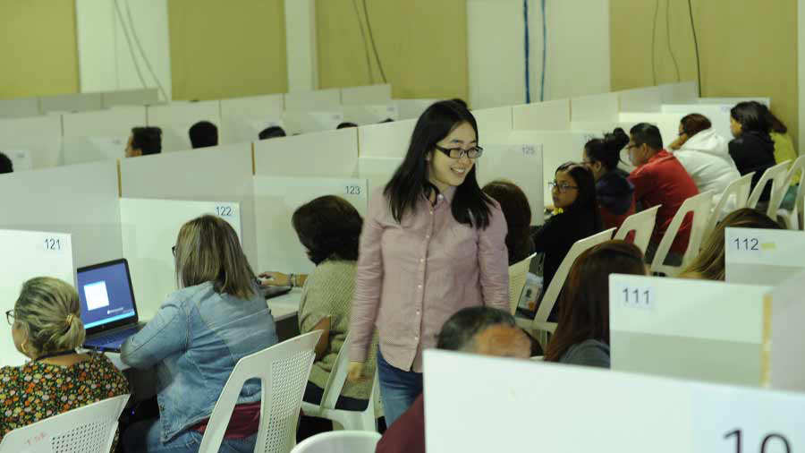
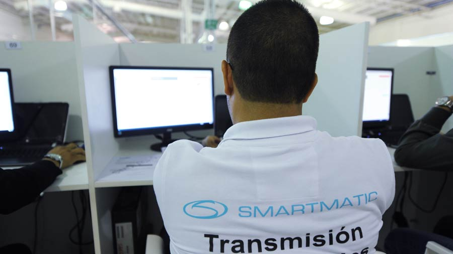
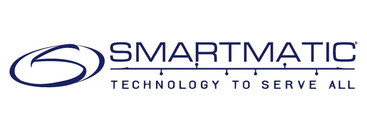

El TSE pagó $3.1 millones a la empresa que falló en las elecciones de 2018
Los magistrados del Tribunal Supremo Electoral (TSE) tendrán que realizar ajustes al sistema coreano para hacer el procesamiento de datos y transmisión de resultados electorales en los próximos comicios presidenciales del 3 de febrero de 2019.
Para las próximas elecciones, el organismo electoral desistió de contratar a Smartmatic, ya que experimentó fallas en la transmisión de los resultados en la elección de diputados al asignar escaños a candidatos equivocados.
El TSE tampoco contratará a otra empresa para que transmita los resultados electorales preliminares en la próxima elección.
Los magistrados decidieron que el Tribunal asuma esa responsabilidad y esa labor la hará utilizando el software coreano, además de los 1,800 escáneres que les donó en la pasada elección la Asociación Mundial de Organismo Electorales (A-Web, por sus siglas en inglés).
Para ello, tendrán que poner a punto los equipos tecnológicos y el software, porque la elección que se viene es muy diferente a la de alcaldes y diputados, donde a manera de prueba se utilizaron los equipos paralelamente a la tecnología de Smartmatic.
“Ya estamos trabajando en eso, estamos viendo ajustes que se tienen que hacer al sistema. La RTS (escáner) estaba hecho o adaptado a la elección de diputaciones y ahora vamos con una presidencial, entonces estamos viendo hacer ajustes para poder ocupar esos mismos sistemas con RTS en la elección presidencial”, explicó el magistrado Fernando Argüello.
El Salvador pago $3.1 millones a Smartmatic
Tras más de cinco meses de ocurrida la falla en la transmisión de resultados en los comicios de alcaldes y diputados, y luego de varias semanas de litigio con la empresa Smartmatic, el TSE reveló que la empresa, de origen venezolano, tuvo que pagar una multa por $226,000 y recibió un pago por $3.1 millones.
Desde hace semanas los magistrados del TSE venían asegurando que ya había un acuerdo entre el TSE y Smartmatic, pero decían desconocer el monto de la multa a imponer, porque era algo que se estaba ventilando en la Bolsa de Productos y Servicios (Bolpros).
El monto original que el Tribunal electoral acordó pagar a la empresa Smartmatic, para el procesamiento y la transmisión de resultados preliminares fue de $3 millones, más el 13 por ciento del Impuesto al Valor Agregado (IVA). En ese sentido el monto total a pagar ascendía a $3.390,000.
Sin embargo, tras el arreglo denominado “amigable componedor” que se llevó a cabo en Bolpros, acordaron multar a Smartmatic con $226,000 y cancelarle $2.800,000.00 más el IVA, lo que significa que la empresa venezolana recibió como pago $3.164,000.
De acuerdo al magistrado Miguel Cardoza, ese desembolso de dinero ya le fue cancelado a Smartmatic.“Esto ya está finiquitado. Termina el litigio con Smartmatic”, aseveró el funcionario del TSE.